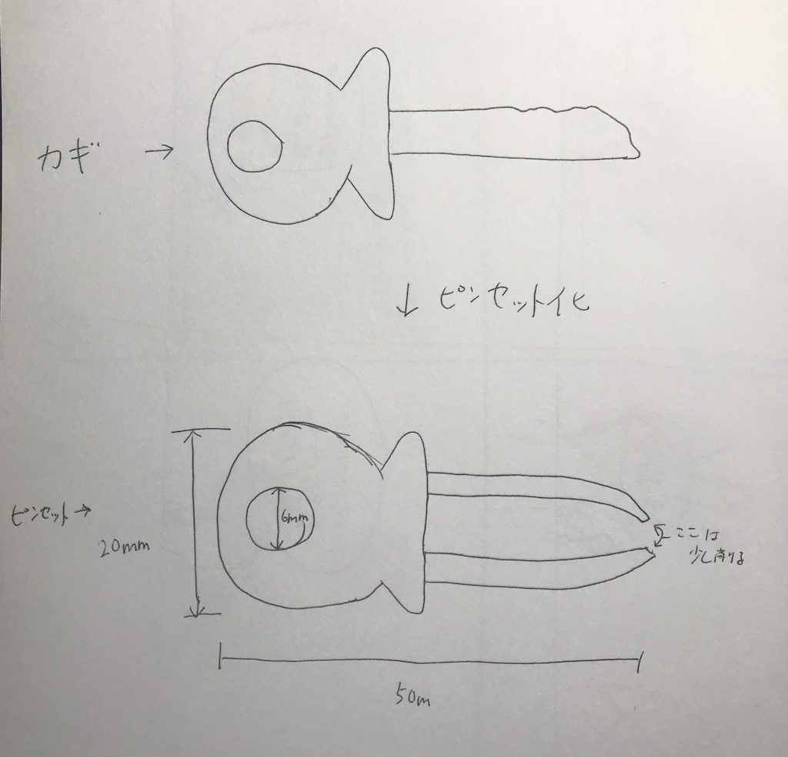

ピンセット製作
今回は、デジタルファブリケーションの課題で、ピンセットの進化系を製作していきます。
1.今回の案に至るまで
まずは、どんなピンセットにするか考えるところからです。設計前の最初の案としては、
- 目に入れても大丈夫なピンセット
- 携帯ピンセット（伸縮型ピンセット）
- 網型ピンセット
- 鍵型ピンセット
の３つの案が出ました。
しかし、ここであることに気づきました。
作るの無理じゃない・・・？
その理由は、材質である。
今回出た案のうち、特に、目に入れても大丈夫なピンセットと網型ピンセットは、従来のピンセットの先端を
網状や目に入れても大丈夫な素材（例えば、シリコン）にすることで、作ろうと考えていました。
しかし、3Dプリントの素材がプラスチックである以上、どんなに設計を工夫しても完成形には到達しないと考え、ボツ案にしました・・・
（いつかリベンジしたいな・・・）
まぁ、気を取り直して、他の案を考えましょう！！
と、思ったんですけど、残りの案にいいのがあったんです！
それが、鍵型ピンセットです。その名の通り鍵の形をしたピンセットです。
「これのどこに利便性があるんだよw」と思うかもしれませんが、これがあるんです。
それは・・・
無くさないこと！！
これが、このピンセット最大の機能であり、利便性です。自分自身、物をなくしてしまうことが多く、ピンセットも2.3回はなくしています。
さらに、鍵型にすることで、持ち運びもしやすくなり、外出中にトゲが刺さったりしたときなどに重宝すると思います。
そういう意味では、最初の案の「携帯ピンセット」につながる案であり、個人的にも欲しいってくらいのアイデアになったため、
これを作っていくことにします！！
↓ストーリーボードはこちら
.jpg)
2. 設計段階
では、さっっそく設計段階に入っていきましょう。
実際のデザイン案としては、このように鍵の挿す部分をピンセットにして、穴を開けることでストラップのようにしようと考えました。

3.モデリング
どのような設計にするか決めたところで、次は、モデリングに入っていきましょう。
設計自体はシンプルなものですので、そこまで苦戦せずに、モデリングすることができました。
↓出来上がった物がこちらです

4.プリント
設計もモデリングも完成したということで、いよいよ、プリントに入っていきます。
↓先ほどの物をプリントしたものがこちらになります ↓ピンセットとして持ってみるとこんな感じ
↓また、実際自分が使っている家、自転車の鍵と
一緒につけてみるとこんな感じです
ということで、無事、ピンセット完成です！！！
4.まとめ・感想
今回は、普段、僕が困っている物をなくしてしまう点とほしい機能である持ち運びしやすいという点の
二つの機能をピンセットにプラスしつつ、割と今までに見たことない形状のものを作ることができたため、
結構上出来なのではないかと思います。
また、初めての3Dプリンターでの製作ということで、戸惑う部分も多々ありましたが、
完成形までなんとか持っていくことができたため、よかったです。
今後は、さらに色々な知識を習得しながら、もっとたくさんの物に挑戦できればと思います！
では、今回はこれで終了します。
ありがとうございました。